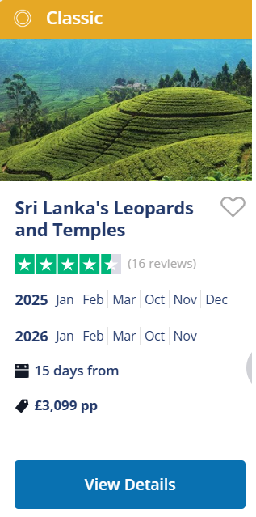
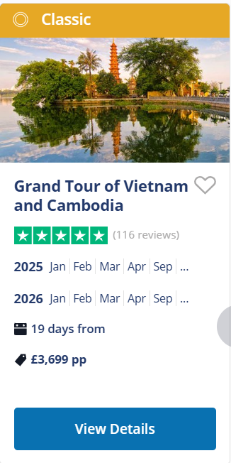

<!-- Overlay effect when opening sidebar on small screens -->
<div class="w3-overlay w3-hide-large" onclick="w3_close()" style="cursor:pointer" title="close side menu" id="myOverlay"></div>

<!-- Main content: shift it to the right by 250 pixels when the sidebar is visible -->
<div class="w3-main" style="margin-left:300px; margin-top: 80px;" align="center">
<h2>Where Would You Like to Go?</h2>
<table width="80%">
<tr>
	<td>India <br><a href="India.html"></a></td>
	<td>Thailand <br></td>
	<td>Sri Lanka <br></td>
	<td>Vietnam <br></td>
</tr>
</table>
<br><h2>Itineraries</h2>
<!-- END MAIN -->
</div>


<script>

// Get the Sidebar
var mySidebar = document.getElementById("mySidebar");

// Get the DIV with overlay effect
var overlayBg = document.getElementById("myOverlay");

// Toggle between showing and hiding the sidebar, and add overlay effect
function w3_open() {
  if (mySidebar.style.display === 'block') {
    mySidebar.style.display = 'none';
    overlayBg.style.display = "none";
  } else {
    mySidebar.style.display = 'block';
    overlayBg.style.display = "block";
  }
}

// Close the sidebar with the close button
function w3_close() {
  mySidebar.style.display = "none";
  overlayBg.style.display = "none";
}


</script>
</body>
</html>